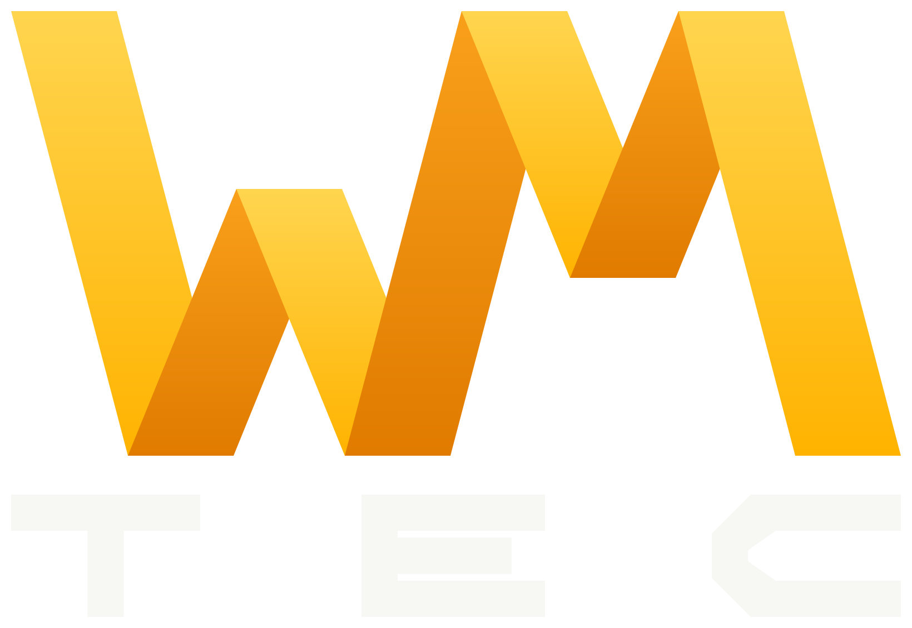
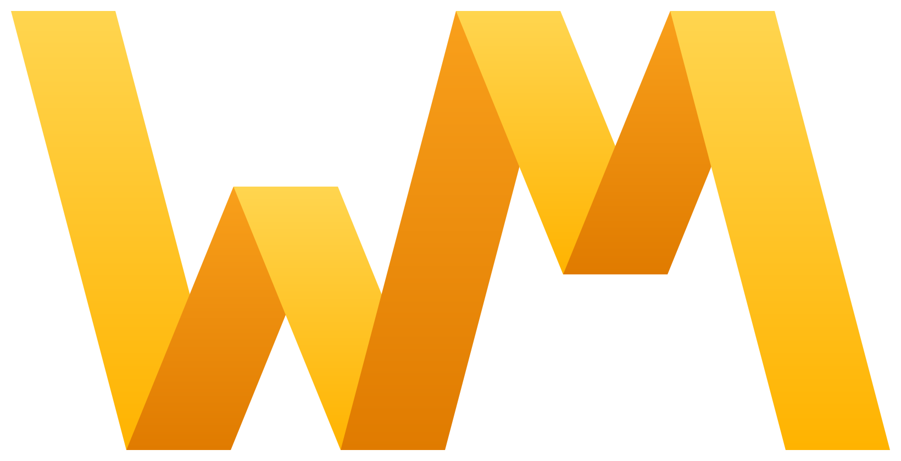
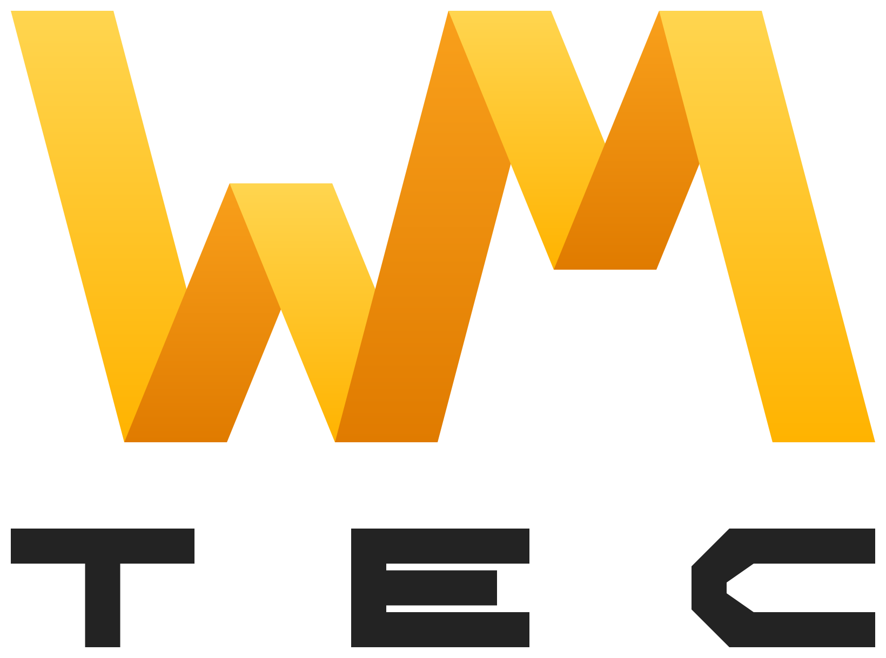
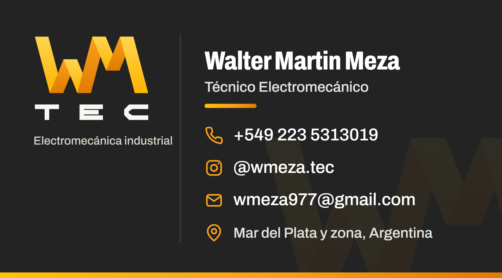
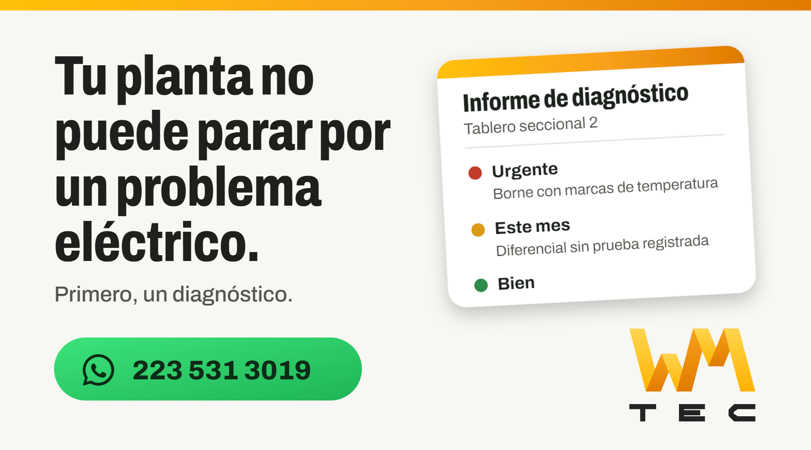

WM TEC es el nombre de trabajo de Walter Martín Meza, técnico mecánico electricista de Mar del Plata, que hace mantenimiento eléctrico industrial y comercial desde 1997: frigoríficos, plantas de alimentos, metalúrgicas, hoteles, colegios, obras y consorcios.
También hace service y reparación de grupos electrógenos, industriales y domésticos.

La W y la M comparten un palo: el último de la W es el primero de la M. Las dos iniciales de Walter Meza, unidas en un solo trazo en zigzag, como una señal eléctrica.

Principal · fondos clarosLa versión con TEC es la principal. Usá el isotipo solo cuando el espacio es chico: ícono de la pestaña, foto de perfil, sello, marca de agua.
wmtec-logo-oscuro.svg
wmtec-logo-claro.svg
wmtec-isotipo.svg
Formato vectorial: se puede agrandar sin perder calidad. El texto TEC está dibujado, no depende de ninguna fuente.
El WM va siempre en el degradado amarillo y naranja. Solo TEC cambia: blanco sobre fondo oscuro, carbón sobre fondo claro.
Alrededor del logo queda siempre libre un margen igual a la altura de las letras de TEC. Nada se apoya dentro de ese margen: ni texto, ni bordes, ni otras imágenes.
Por debajo de esas medidas las letras TEC se vuelven ilegibles. En ese caso se usa solo el isotipo.
Regla de uso. El amarillo y el naranja son los de marca; el carbón es el fondo. El verde de WhatsApp se usa solo para botones que abren WhatsApp. Los colores del semáforo (rojo, ámbar, verde) se usan solo en los informes de diagnóstico.
Proporción. Carbón y neutros ocupan la mayor parte; el amarillo aparece en detalles y en el logo. Si todo es amarillo, nada destaca.
Reviso tableros, motores y protecciones antes de que fallen, y atiendo cuando algo ya falló.
Toda la marca usa Archivo, de Google Fonts (gratuita), con ancho variable.
| Títulos | ExtraBold 800, ancho 70 a 85 |
| Subtítulos | Bold 700, ancho 90 |
| Texto | Regular 400, ancho 100 |
| Botones | Bold 700 |
| Largo de línea | Hasta 65 caracteres |
Si no se puede usar Archivo, el reemplazo es Arial o Helvetica en negrita para títulos y regular para texto.
Las franjas y cortes siguen el ángulo de las patas del WM. Es el que se ve en la tarjeta y puede usarse en fondos y separadores.
Botones y campos en píldora (redondeo total). Tarjetas con 24 px de redondeo. Siempre los mismos valores.
El informe de diagnóstico se ordena con tres estados. Es el sello de la marca: algo que solo alguien del rubro pondría.
Franja amarillo a naranja bajo el encabezado y sobre las tarjetas principales.
Siempre reales: Walter trabajando, tableros, trabajos terminados. Nada de fotos de stock ni ilustraciones 3D genéricas.
De línea, mismo grosor y mismo tamaño. Un solo estilo en toda la pieza.
Habla como habla Walter: directo, concreto, en voseo rioplatense. Con palabras del oficio, no con frases de folleto. Explica lo que encuentra y lo que hay que hacer.
Frases cortas. Un dato concreto antes que un adjetivo. Teléfono y WhatsApp siempre a la vista. No se usan emojis ni mayúsculas sostenidas en las piezas.


90 x 50 mm, doble faz. Archivo para imprenta: tarjeta-doble-faz.pdf
Ilustración 300 g con laminado mate. El carbón queda más profundo que con brillante.
Frente: logo, nombre, oficio y datos de contacto. Dorso: el mensaje de la marca, el semáforo del informe y el botón de WhatsApp.
Fondo carbón, logo con TEC, franja de degradado abajo y un solo botón de acción en verde.
Instagram, Facebook y WhatsApp: isotipo sobre carbón, centrado.
Logo arriba, título en peso 800, semáforo y barra de degradado.
Nombre de marca: WM TEC. Instagram: @wmeza.tec. Teléfono y WhatsApp: 223 531 3019.
WM TEC, con las dos letras en mayúscula y separado. No WMTec, WMTEC ni WM Tec.
Dominio web definitivo, matrícula y datos de seguros para sumar a la franja de confianza.